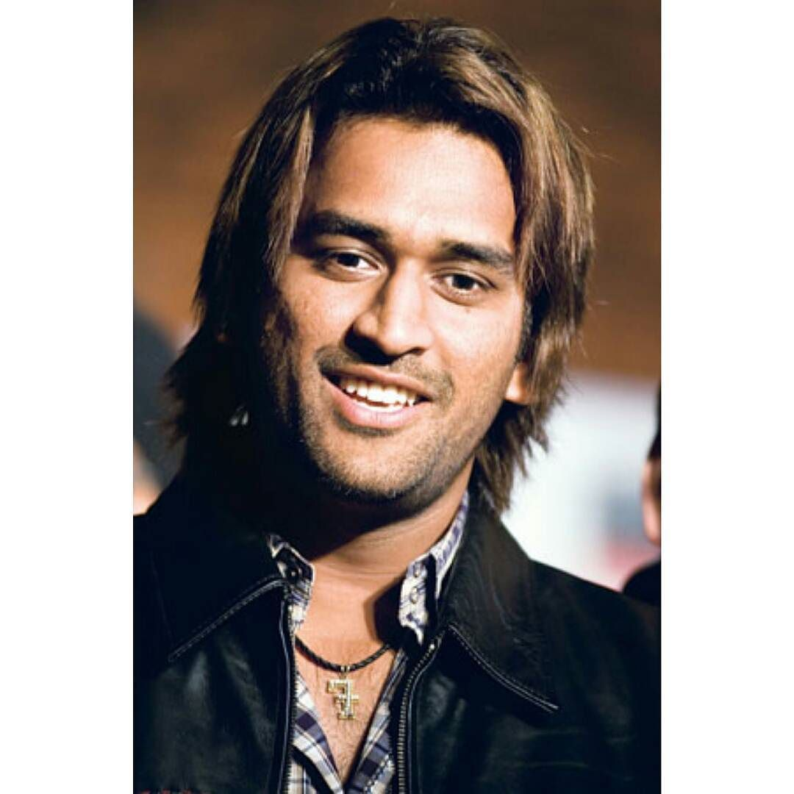

The Captain Cool of Indian Cricket

MS Dhoni, born on July 7, 1981, is a former Indian cricketer and one of the most successful captains in the history of Indian cricket. Known for his calm demeanor and exceptional leadership skills, Dhoni led the Indian cricket team to numerous victories, including the 2007 ICC World Twenty20, the 2010 and 2016 Asia Cups, and the 2011 ICC Cricket World Cup.
During his career, Dhoni established himself as one of the best wicket-keeper batsmen in the world. His lightning-fast stumping and powerful batting made him a formidable player in all formats of the game. Dhoni retired from international cricket in August 2020, leaving behind a remarkable legacy.
Key Achievements
Won the ICC World Twenty20 in 2007
Led India to victory in the inaugural ICC World Twenty20, defeating Pakistan in the final.
Won the ICC Cricket World Cup in 2011
Captained India to win the ICC Cricket World Cup after 28 years, defeating Sri Lanka in the final.
Won the Champions Trophy in 2013
Dhoni led India to win the ICC Champions Trophy, defeating England in the final.

Received the Padma Bhushan on April 2, 2018
Under Dhoni, India had become the first-ever host country to win the 50-over World Cup.
Highlights
- MS Dhoni used to work for the Indian railways before he began playing professional cricket.
- He is the only player to have won the ICC ODI Player of the Year award twice.
- Got the rajiv Gandhi khel ratna award in 2007.
- Got padma shri, india's fourth highest civilian in 2009.
- He is the only captain to win all the three ICC trophies.
- Dhoni has always been regarded as one of the greatest finishers in limited time format.
- Dhoni in one of the most successful captains in the IPL, having led the chennai super kings to 10 finals of the team has won 5 of them.
- Dhoni is the worlds 3 best wicket keeper.
- The sportsman has an envy-worthy collection of bikes amounting to crores of rupees.
- In fact, he even co-owns a motorcycle racing team with Telugu film star Akkineni Nagarjuna.
- The cricketer has also earned title of ‘Lieutenant Colonel’.
- MS Dhoni's trademark ‘Helicopter Shot’ was taught to him by his former teammate and close friend.
Quote
"I have three dogs at home. Even after losing a series or winning a series, they treat me the same way."– MS Dhoni